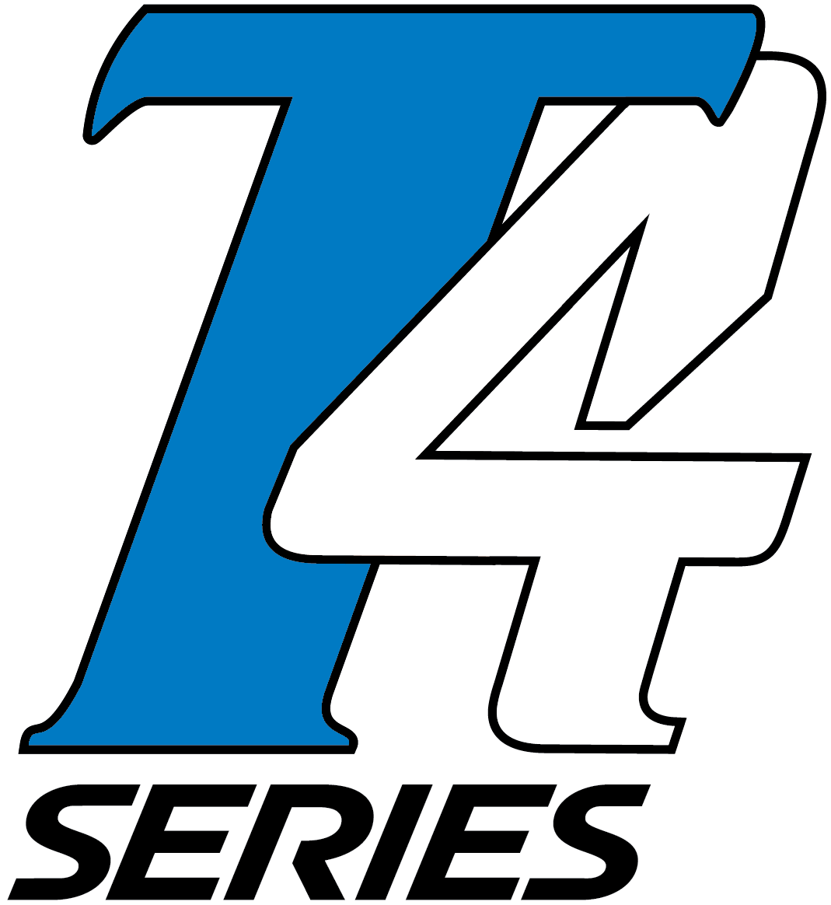
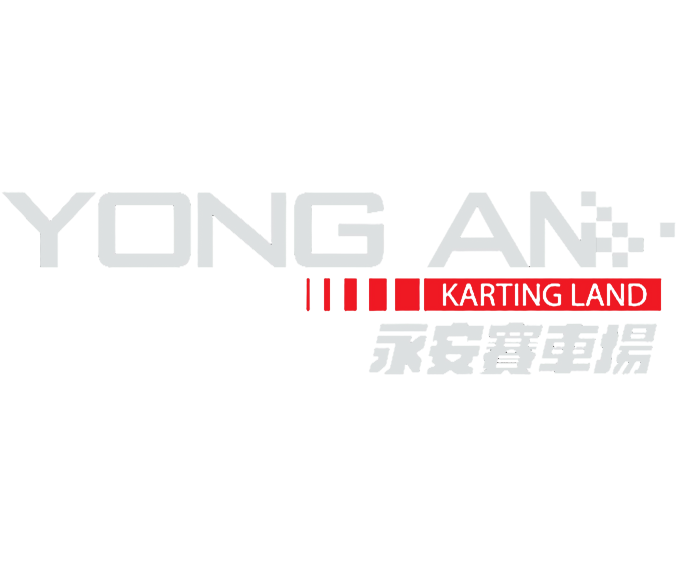
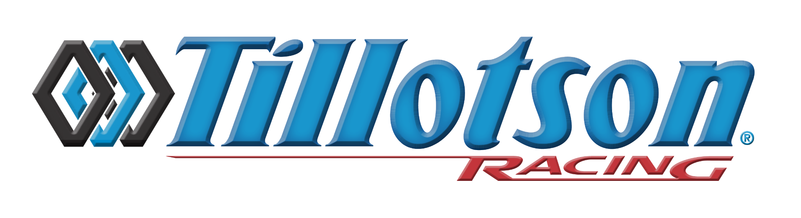
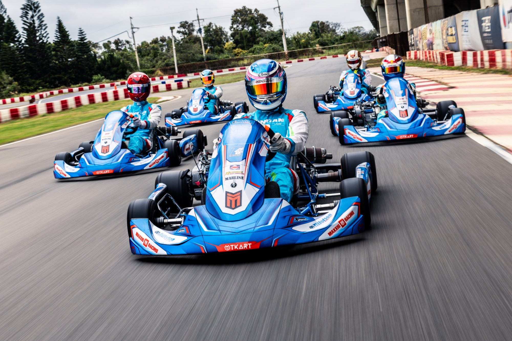
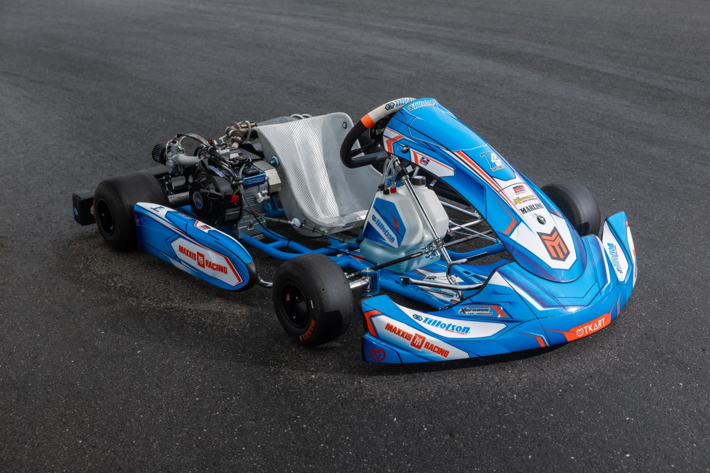
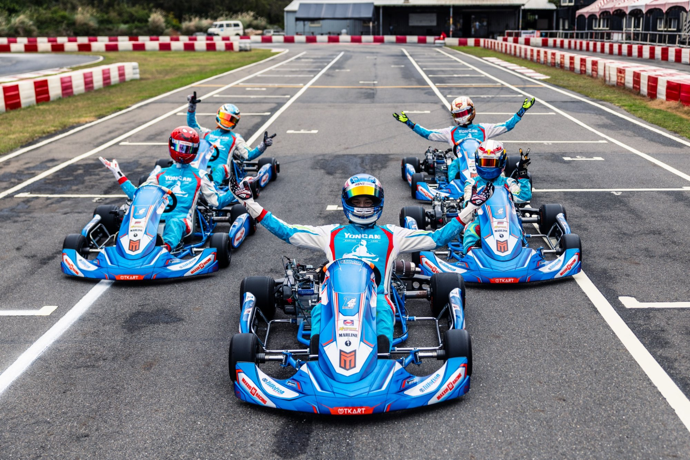
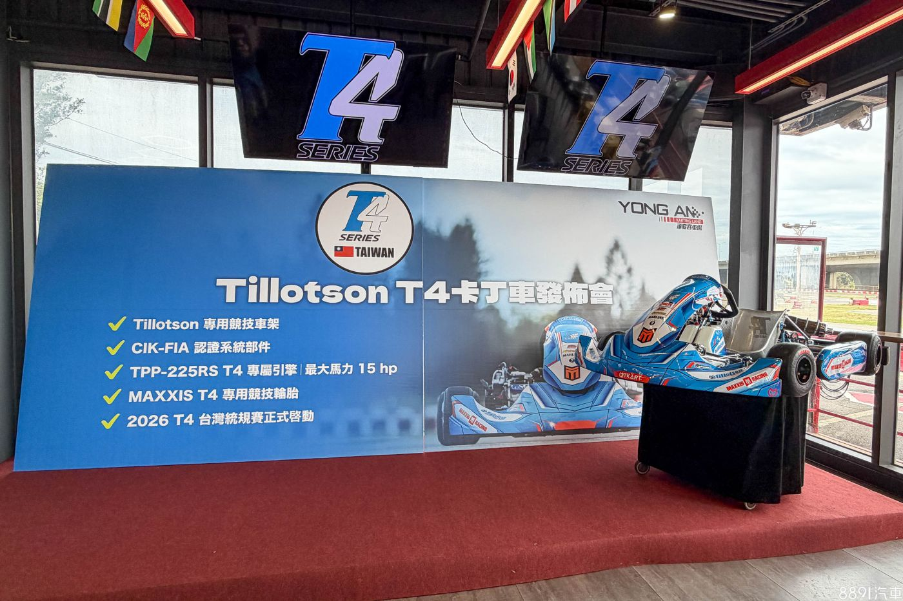
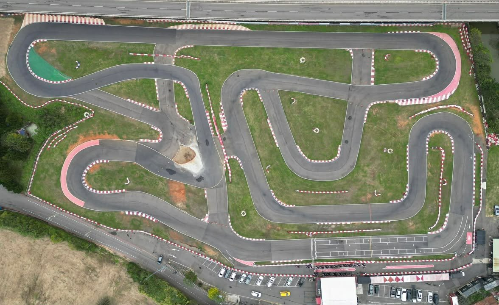
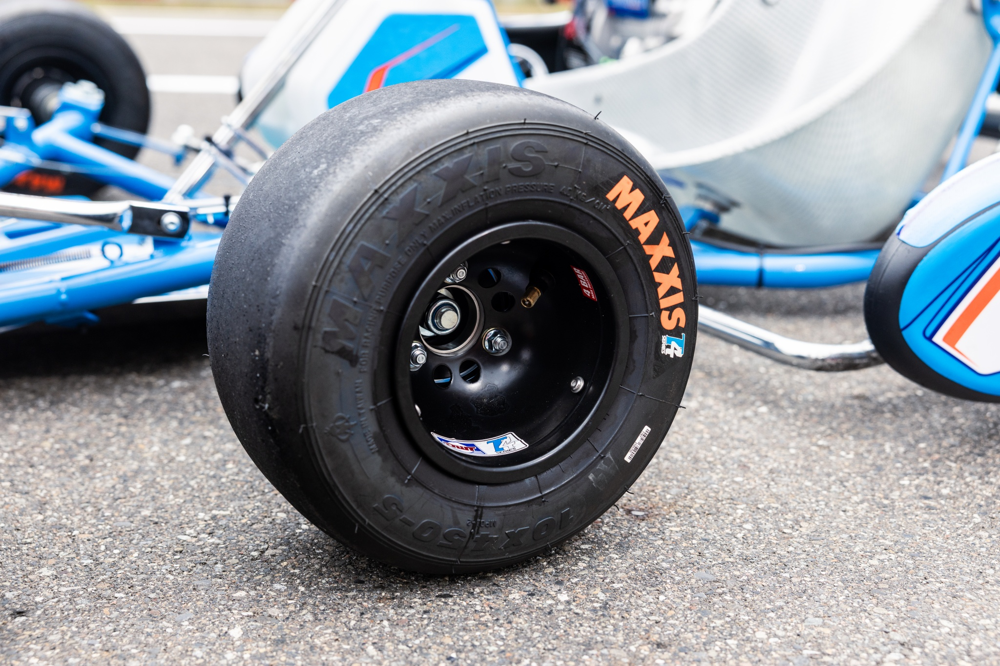

從記者會到賽道，從首圈到競賽——T4 Series Taiwan 的每一個現場，都是宣言。
每一張都是一段賽車旅程的見證這裡是台灣卡丁車歷史的新起點






影片說的比任何文字更直接。這就是 T4 Series Taiwan。
永安賽車場是北台灣唯一的專業卡丁車場，賽道全長1公里、寬10公尺。2026年正式引進 Tillotson T4 系統，讓台灣車手有機會站上國際舞台。每一場比賽的積分，都是前往西班牙世界盃的門票。
圖片和影片只是一小部分。最真實的體驗，在賽道上等著你。